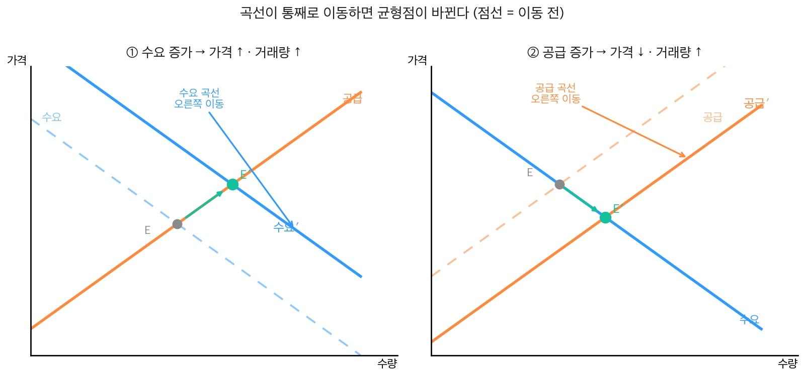

사과는 흉년, 콘서트는 인기 — 같은 '가격 상승' 다른 범인
- 수요·공급을 변화시키는 요인(소득·기호·관련재·생산비·기술 등)을 설명할 수 있다.
- 곡선 위의 이동(수요량 변화) 과 곡선 자체의 이동(수요 변화) 을 구분할 수 있다.
- 수요·공급의 변화가 균형 가격·균형 거래량을 어떻게 바꾸는지 예측할 수 있다.
- 대체재(代替財): 서로 대신 쓸 수 있는 재화 (예: 소고기 ↔ 돼지고기, 콜라 ↔ 사이다)
- 보완재(補完財): 함께 쓸 때 만족이 커지는 재화 (예: 스마트폰 ↔ 케이스, 프린터 ↔ 잉크)
- 수요량의 변화: 가격이 변해 곡선 위의 점이 움직이는 것
- 수요의 변화: 가격 외의 요인으로 곡선 자체가 통째로 움직이는 것
🎙️ 지난 시간(19-20) 기억나? 가격은 수요·공급이 만나는 균형점에서 정해진다고 했지. 근데 그 가격은 가만히 안 있어. 사과값은 작년보다 18% 올랐고, NCT 콘서트 티켓값도 폭등했어. 둘 다 "가격 상승"이지만 범인이 완전 달라.
💬 범인 추리
사과값 상승 = 흉년으로 생산이 줄어서 (→ 공급 쪽 문제). 콘서트값 상승 = 가고 싶은 사람이 폭발해서 (→ 수요 쪽 문제). 오늘은 수요와 공급을 움직이는 진짜 요인을 찾는다.
가격이 그대로여도 수요는 변할 수 있다. 교과서가 든 요인은 이렇다.
- 소득: ①이 늘면 대개 수요도 는다.
- 기호(취향): 유행·선호가 바뀌면 ②에 따라 수요가 변한다.
- 관련재 가격: 서로 대신 쓰는 ③와, 함께 쓰는 ④의 가격이 영향을 준다.
- 미래 예상·수요자 수: 값이 오를 것 같으면 미리 사두고, 사려는 사람이 늘면 수요도 는다.
(교과서 원문: "어떤 상품의 수요는 가격 외에도 여러 가지 요인의 영향을 받는다. 소득이 증가하면 대개 수요도 증가하며, 기호 변화도 수요에 영향을 미친다. … 승용차 가격이 내리면 … 보완재인 휘발유 수요도 증가한다. 소고기 가격이 오르면, 대체재인 돼지고기를 찾는 사람이 많아지므로 돼지고기 수요가 증가한다." 천재교육 사회②(구정화) p.82)
💡 대체재 vs 보완재 — 한 방에 구분
대체재 = "둘 중 하나만" (소고기 비싸지면 → 돼지고기로 갈아탐). 보완재 = "둘이 한 세트" (스마트폰 사면 → 케이스도 삼). 한쪽 가격이 오르면 — 대체재는 반대편 수요 ↑, 보완재는 짝꿍 수요 ↓.
공급도 가격 말고 여러 요인으로 변한다.
- 생산비(생산 요소 가격): 원료·임금 등 ⑤가 오르면 공급이 줄고, 내리면 는다.
- 생산 기술: ⑥이 발전하면 같은 비용으로 더 많이 만들어 공급이 는다.
- 공급자 수·자연조건: 파는 기업(⑦ 수)이 늘거나 날씨가 좋으면(풍년) 공급이 는다.
(교과서 원문: "생산 기술이 발전하면 생산 비용이 절감되거나 생산성이 높아지므로 공급이 증가한다." 천재교육 사회②(구정화) p.83 · 예: 배추 풍년 → 배추 공급 증가)
🎙️ 사과 흉년을 생각해 봐. 날씨가 안 좋아 생산이 줄면 → 공급 곡선이 왼쪽으로 밀려 → 같은 값이어도 시장에 나오는 사과가 적어져 → 결국 값이 뛴다. 생산 쪽 사정이 가격을 움직인 거야.
여기가 제일 헷갈리는 곳이야. 둘은 완전히 다르다.
- 가격이 변해서 사는 양이 달라지는 건 → 곡선 위의 점이 미끄러지는 ⑧의 변화.
- 가격 외 요인(소득·기호 등)으로 수요 자체가 달라지는 건 → 곡선 전체가 통째로 옮겨가는 ⑨의 변화.
수요가 늘면 수요곡선이 ⑩으로, 줄면 왼쪽으로 통째로 이동한다.
(교과서 원문: "가격의 변화에 따른 수요량의 변화는 수요 곡선 상에서의 점의 이동으로 나타난다. 한편 가격 외 요인에 의한 수요의 변화는 … 수요 곡선 자체의 이동으로 나타난다." 천재교육 사회②(구정화) p.82)
⚠️ 자주 하는 오해 — "값이 오르면 수요가 준다"와 "유행이 식어 수요가 준다"는 다른 그림이야. 앞은 곡선 위에서 점이 움직인 것(수요량 변화), 뒤는 곡선이 통째로 왼쪽으로 간 것(수요 변화). 19-20에서 짚었던 그 구분이 여기서 결정적이야.
📊 헷갈리면 이 표 — 수요량의 변화 vs 수요의 변화
| 구분 | 수요량의 변화 | 수요의 변화 |
| 왜 변했나 | 그 상품의 가격이 변해서 | 가격 말고 다른 것(소득·기호·관련재…) |
| 그래프 | 곡선 위의 점이 미끄러짐 | 곡선 자체가 좌우로 통째로 이동 |
| 말로 하면 | "비싸져서 덜 산다" | "유행해서 더 산다" |
| 예 | 떡볶이 값 올라 덜 사 먹음 | 그 가수 떡볶이 광고 떠서 더 사 먹음 |
🔑 '량(量)' 한 글자로 구분! — 수요량처럼 '량'이 붙으면 → 가격 때문에 사는 양만 바뀐 것(곡선 위 점 이동). '량'이 없는 '수요'는 → 마음(욕구) 자체가 바뀐 것(곡선이 통째로 이동).
💡 마음이 바뀌면 왜 통째로 이동할까? 수요곡선은 가격마다 살 개수를 적어 둔 표야. 그 아이돌이 광고에 떠서 더 갖고 싶어지면(마음 변화) → 1,000원이든 5,000원이든 모든 가격에서 살 개수가 한꺼번에 늘어. 점 하나가 아니라 표(곡선) 전체가 새로 그려지는 거지. (가격만 바뀌면? 표는 그대로, 그 위 점만 이동)
🔗 직접 움직여 보기: 시장가격 LAB에서 '수요 증가/공급 증가' 버튼을 누르면 곡선이 통째로 대각선 이동(점선=이전 곡선)하는 걸 볼 수 있어. → `19-20차시_시장가격_LAB.html`
곡선이 움직이면 균형점도 새 자리로 간다.

| 무엇이 변했나 | 곡선 이동 | 균형 가격 | 균형 거래량 | 실제 사례 |
| 수요 증가 | 수요곡선 오른쪽 | ⑪ | 늘어남 | 콘서트 인기 폭발 |
| 수요 감소 | 수요곡선 왼쪽 | 내림 | 줄어듦 | 유행 지난 굿즈 |
| 공급 증가 | 공급곡선 오른쪽 | ⑫ | 늘어남 | 딸기 풍년 |
| 공급 감소 | 공급곡선 왼쪽 | 오름 | 줄어듦 | 사과 흉년 |
💡 암기 팁: 수요가 움직이면 가격·거래량이 같은 방향, 공급이 움직이면 반대 방향. (19-20에서 배운 그 규칙 그대로!)
가격은 ① 가격 외 요인(소득·기호·관련재·생산비·기술)이 ② 수요·공급 곡선을 통째로 이동시키면 ③ 균형점이 새 자리로 옮겨 변동한다. — 곡선 위 이동(수요량)과 곡선 자체 이동(수요)을 꼭 구분!
아래 카드가 수요 변화 요인인지 공급 변화 요인인지 표시하자. (수=수요 / 공=공급)
| 카드 | 수 / 공 |
| 용돈(소득)이 늘었다 | |
| 원료값이 올랐다 | |
| 그 가수가 갑자기 유행이다(기호) | |
| 새 생산 기술이 나왔다 | |
| 가게(공급자) 수가 늘었다 | |
| 곧 값이 오를 것 같다(예상) |
각 상황에서 어느 곡선이 어느 쪽으로 움직였고, 균형 가격은 어떻게 될까?
| 상황 | 어느 곡선? | 어느 방향? | 가격은? |
| 1. 폭염으로 아이스크림 인기 ↑ | |||
| 2. 스마트폰 가격 ↓ → 케이스는? | |||
| 3. 사과 흉년 |
시장가격 LAB에서 '수요 증가'와 '공급 증가'를 각각 눌러 보고, 곡선이 어느 쪽으로 통째로 이동하는지·균형 가격/거래량이 어떻게 바뀌는지 적어 보자.
| 버튼 | 곡선 이동 방향 | 균형 가격 | 균형 거래량 |
| 수요 증가 | |||
| 공급 증가 |
정답이 정해진 문제가 아니야. 네 경험과 판단을 솔직하게 써 보자. 검색·AI는 참고만 하고, 마지막 문장은 네 생각으로 끝내자.
Q1. 내 소비로 설명하기
최근 가격이 아닌 다른 이유(유행·용돈·친구 추천·새 기기 구입 등)로 무언가를 더(또는 덜) 사고 싶어졌던 너의 경험 하나를 쓰고, 그게 '수요의 변화'인지 '수요량의 변화'인지 이유와 함께 설명해 보자.
Q2. 값이 폭등할 때 — 시장에 맡길까, 정부가 막을까?
💬 진짜 있었던 일: 2025~2026년 겨울, 조류 인플루엔자로 닭이 많이 살처분되어 계란 공급이 줄자 계란 한 판 값이 7,000~8,000원까지 뛰었어. 이때 "정부가 계란값에 개입해야 한다 vs 시장에 맡겨야 한다"를 두고 실제로 논쟁이 벌어졌지.
이처럼 (계란값·콘서트 암표·명절 과일처럼) 값이 크게 오를 때, ㉮ "시장 가격에 맡기자" vs ㉯ "정부가 가격을 제한하자" 중 너는 어느 쪽이 더 옳다고 생각해? 반대편 입장도 한 가지 인정한 뒤, 네 선택과 이유를 써 보자.